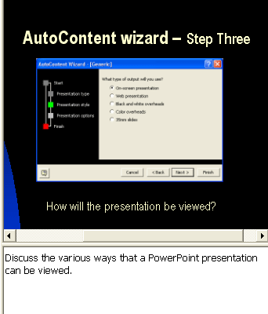

Free
powerpoint
Tutorials
|
Free
powerpoint
Tutorials
|
|
 home home |
Stay at Home and Learn | ||||
Complete your First PowerPoint Presentation |
|||||
|
Part 1, 2, 3, 4, 5, 6, 7, 8, 9, 10, 11
Now that you have one image slide done, you can do slides 4, 5 and 6. These are going to be more or less the same as slide three, with an image and some text below it. Rather than go through them with you, we'll leave you to complete these three slides for yourself.
Exercise Finish your presentation using the same techniques you've learned throughout these first lessons. For reference, load up our completed presentation, which you can find here: The images you need are here, if you haven't yet downloaded them: The images to insert on each slide are: Slide 4 - autoContentWizardStep2.jpg
Text for your Text Boxes The text for your text boxes should be as follows: Slide 4 - Text for text box Slide 5 - Text for text box
Notes for the Slides The notes for these slides can be as follows: Slide 4 - Notes This step of the Wizard will determine what
content the default slides will contain. It will also determine what
the background of each slide looks like. Note where the green square
is now.
Slide 5 - Notes Slide 6 - Notes
Completed Slides When you're finished, slides 4, 5 and 6 should look like these: Slide 4
Slide Five 
Slide Six
But remember the steps you took for slide 3. They are as follows:
After you have completed slides 4, 5 and 6, there is only one more
slide to do before the slide show is finished - slide 7.
Exercise Using the techniques you have learnt in this section, complete slide 7. You can use a bulleted list to sum up what the slideshow has been about. Use any text you like. (Look at our finished presentation if you're stuck for what to add.)
In the next section, you'll learn how to create a presentation without the help of the Wizard.
|
||||